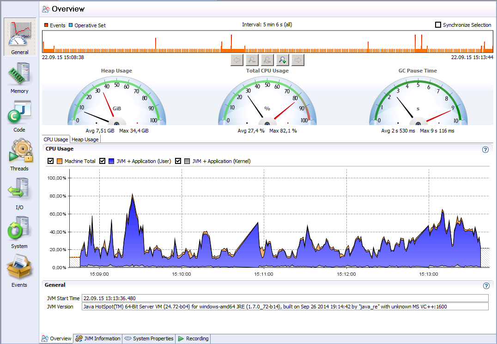
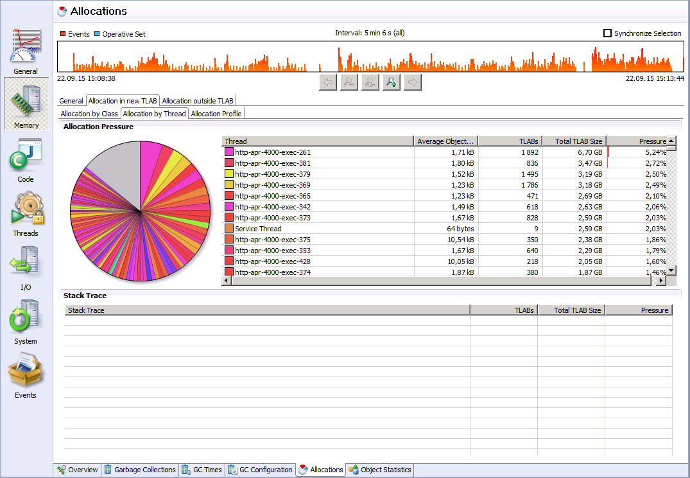
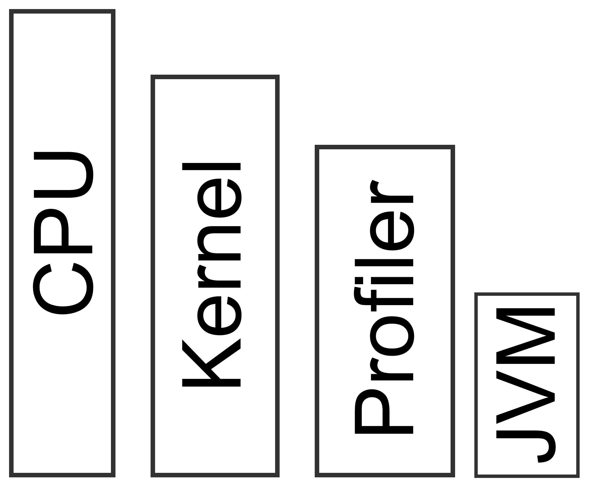
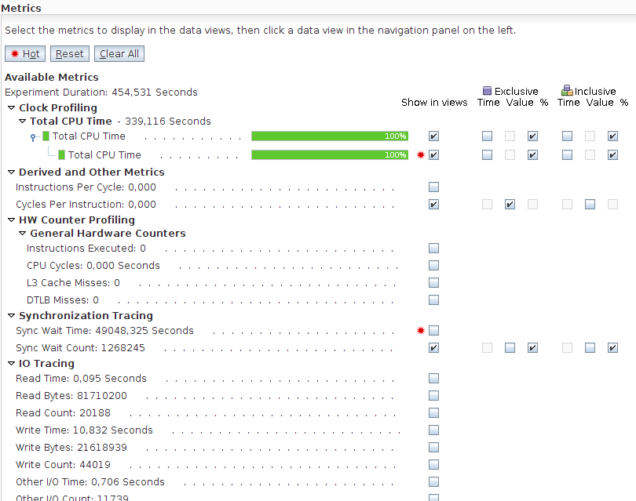

Java apps per4mance breakdown
Кирпиченков Денис / @dkirpichenkov/ d0k1@mail.ru
d0k1.github.io/jug.sev.perf/
Java приложения работают медленно
Java приложения работают медленно
Metrics
- Elapsed Time
- Throughput
- Response time
The most important metric
Get code as far from me as possible
OS Level
- CPU
- Memory
- Disks
- Network
OS Level
CPU / Memory - top
OS Level
CPU / Memory - top
load average: 0,18, 0,21, 0,22
1m 5m 15m
OS Level
CPU / Memory - top
KiB Mem: 8053744 total, 7828364 used, 225380 free, 19448 buffers
KiB Swap: 9765884 total, 869032 used, 8896852 free. 943112 cached Mem
OS Level
Disks - iostat
$ iostat -xm
Linux 3.16.0-50-generic (laptop) 25.09.2015 _x86_64_ (4 CPU)
avg-cpu: %user %nice %system %iowait %steal %idle
18,78 0,39 4,87 0,50 0,00 75,45
Device: rrqm/s wrqm/s r/s w/s rMB/s wMB/s avgrq-sz avgqu-sz await r_await w_await svctm %util
sda 0,69 3,55 5,74 1,81 0,09 0,06 40,75 0,11 14,64 9,12 32,18 1,30 0,98
OS Level
Network - nicstat
$ nicstat -a 01:59:03 InKB OutKB InSeg OutSeg Reset AttF %ReTX InConn OutCon Drops TCP 0.00 0.00 4.17 3.32 0.03 0.02 0.000 0.01 0.06 0.00 01:59:03 InDG OutDG InErr OutErr UDP 3.67 3.59 0.00 0.00 01:59:03 RdKB WrKB RdPkt WrPkt IErr OErr Coll NoCP Defer %Util wlan0 4.34 1.21 4.24 3.01 0.00 0.00 0.00 0.00 0.00 0.00 lo 0.31 0.31 0.56 0.56 0.00 0.00 0.00 0.00 0.00 0.00 tun0 1.11 0.67 1.33 1.20 0.00 0.00 0.00 0.00 0.00 0.15
OS Level
- CPU - top
- Memory - top
- Disks - iostat
- Network - nicstat
JVM Level
- jstack
- jstat
- jcmd
- jmap
JVM Level
jstack
jdk8u-dev/jdk/src/share/classes/sun/tools/jstack/JStack.java
Full thread dump Java HotSpot(TM) 64-Bit Server VM (24.72-b04 mixed mode):
"Thread-1" daemon prio=6 tid=0x00000000629f1000 nid=0x1994 runnable [0x000000006d4ea000]
java.lang.Thread.State: RUNNABLE
at java.net.SocketInputStream.socketRead0(Native Method)
at java.net.SocketInputStream.read(SocketInputStream.java:152)
at java.net.SocketInputStream.read(SocketInputStream.java:122)
at com.microsoft.sqlserver.jdbc.TDSChannel.read(IOBuffer.java:1782)
at com.microsoft.sqlserver.jdbc.TDSReader.readPacket(IOBuffer.java:4838)
- locked <0x00000006db7d1228> (a com.microsoft.sqlserver.jdbc.TDSReader)
at com.microsoft.sqlserver.jdbc.TDSCommand.startResponse(IOBuffer.java:6154)
at com.microsoft.sqlserver.jdbc.TDSCommand.startResponse(IOBuffer.java:6106)
JVM Level
jstat
jdk8u-dev/jdk/src/share/classes/sun/tools/jstat/Jstat.java$ jstat -gccause 24342 S0 S1 E O M CCS YGC YGCT FGC FGCT GCT LGCC GCC 2.11 0.00 71.83 31.13 97.80 96.51 22 0.696 10 1.846 2.542 GCLocker Initiated GC No GC
JVM Level
jcmd
jdk8u-dev/jdk/src/share/classes/sun/tools/jcmd/JCmd.java- jcmd PID PerfCounter.print
- jcmd PID GC.class_histogram
JVM Level
jmap
jdk8u-dev/jdk/src/share/classes/sun/tools/jmap/JMap.java
$ jmap -F -dump:format=b,file=/tmp/dump.hprof 25914Measure ⇒ Fix ⇒ Measure
-
boolean clientSatisfied=false; while(!clientSatisfied) { // Find a bottleneck profileIt(); // Make necessary and sufficient changes fixIt(); // Prove that you've fixed the problem profileIt(); clientSatisfied = testInProduction(); }
Software bounds
- CPU: cache, algorithm
- Memory: leaks, algorithm
- IO: cache, batch
Mission (under) Control
-
$ java -XX:+UnlockCommercialFeatures -XX:+FlightRecorder -version -
$ jcmd 5368 JFR.start filename=myrecording.jfr -
$ jcmd 5368 JFR.stop -
$ jcmd 5368 JFR.dump -
$ jmc
Mission (under) Control
Mission (under) Control
Mission (under) Control
Mission (under) Control
Mission (under) Control
Mission (under) Control
Mission (under) Control
Mission (under) Control
Mission (under) Control
Profilers

Profilers
Instrumenting profiler
Profilers
Instrumenting profiler Cont.
Profilers
Sampling profiler
Profilers
Native profiler
Profilers
DIY
#!/bin/bash
pids=`$JAVA_HOME/bin/jps | grep -v Jps | awk '{print $1}'`
for pid in $pids; do
user=`ps -eo user,pid| grep $pid | awk '{print $1}'`
date=`date '+%Y%m%d-%H:%M:%S'`
su - $user -c "$JAVA_HOME/bin/jstack $pid" > jstack.$pid.$date
done
ps -e -Topcpu,pid,tid,rss,args=| grep java| grep -v grep |sort -nrk1
pids='30260 30261' # найденные на предыдущем шаге идентификаторы
nids=`for i in $tids; do echo "obase=16; $i" | bc | tr '[:upper:]' '[:lower:]'; done`
echo $nids
Profilers
DIY
Profilers
Netbeans
Profilers
Oracle Solaris Studio
$ collect -d /tmp/oss -p high -S on -h on -i on -s all -y SIGPROF java -version
$ analyzer /tmp/oss/test.1.er [/tmp/oss/test.2.er]
Profilers
Oracle Solaris Studio
Profilers
Oracle Solaris Studio

Profilers
Oracle Solaris Studio
Profilers
Oracle Solaris Studio
Profilers
Oracle Solaris Studio
Profilers
Oracle Solaris Studio
Profilers
DIY examples
JVMTI examples
jdk/src/share/demo/jvmti- mtrace
- heapTracker
github.com/devexperts/aprof
Profilers
DIY examples
(the very) honest profiler
github.com/RichardWarburton/honest-profilerBenchmarks
JMH
http://openjdk.java.net/projects/code-tools/jmh/http://java-performance.info/introduction-jmh-profilers
@BenchmarkMode(Mode.AverageTime)
@OutputTimeUnit(TimeUnit.MICROSECONDS)
@Warmup(iterations = 3, time = 1, timeUnit = TimeUnit.SECONDS )
@Measurement(iterations = 7, time = 3, timeUnit = TimeUnit.SECONDS)
@Threads( 2 )
@State(Scope.Thread)
public class ThreadDumpTest {
@Group("jdk")
@GroupThreads(1)
@Benchmark
public Map testCoreWay() throws InterruptedException {
Thread.sleep( SLEEP );
return Thread.getAllStackTraces();
}
public static void main(String[] args) throws RunnerException {
Options opt = new OptionsBuilder()
.include(".*" + ThreadDumpTest.class.getSimpleName() + ".*")
.forks(1)
.build();
new Runner(opt).run();
}
}
JMeter
http://jmeter.apache.org/JMeter
JMeter
Become better
Log
[http-apr-80-exec-6 192.168.224.69 naumen] (07 окт 2013 00:01:21,407) INFO dispatch.Dispatch - GetDtObjectListAction [getPermissions()=null, ... ]
[http-nio-10063-exec-1 192.168.224.69 naumen] (22 сен 2015 00:02:21,407) INFO dispatch.Dispatch - GetMetainfoVersionAction [] [http-nio-10063-exec-1 192.168.224.69 naumen] (22 сен 2015 00:02:21,530) INFO dispatch.Dispatch - Done(123):GetMetainfoVersionAction []
Become better
Improved jstack
Full thread dump Java HotSpot(TM) 64-Bit Server VM (24.72-b04 mixed mode):
"http-apr-8080-exec-296 192.168.224.69 naumen GetMetainfoVersionAction" daemon prio=6 tid=0x00000000629f1000 nid=0x1994 runnable [0x000000006d4ea000]
java.lang.Thread.State: RUNNABLE
at java.net.SocketInputStream.socketRead0(Native Method)
at java.net.SocketInputStream.read(SocketInputStream.java:152)
at java.net.SocketInputStream.read(SocketInputStream.java:122)
at com.microsoft.sqlserver.jdbc.TDSChannel.read(IOBuffer.java:1782)
at com.microsoft.sqlserver.jdbc.TDSReader.readPacket(IOBuffer.java:4838)
- locked <0x00000006db7d1228> (a com.microsoft.sqlserver.jdbc.TDSReader)
at com.microsoft.sqlserver.jdbc.TDSCommand.startResponse(IOBuffer.java:6154)
at com.microsoft.sqlserver.jdbc.TDSCommand.startResponse(IOBuffer.java:6106)
"http-apr-8080-exec-254 192.168.224.69 naumen EditObjectAction(uuid=task$123)" daemon prio=6 tid=0x000000004c81c000 nid=0x1dfc runnable [0x0000000067afa000]
java.lang.Thread.State: RUNNABLE
at java.net.SocketOutputStream.socketWrite0(Native Method)
at java.net.SocketOutputStream.socketWrite(SocketOutputStream.java:113)
at java.net.SocketOutputStream.write(SocketOutputStream.java:159)
at com.microsoft.sqlserver.jdbc.TDSChannel.write(IOBuffer.java:1798)
at com.microsoft.sqlserver.jdbc.TDSWriter.flush(IOBuffer.java:3581)
at com.microsoft.sqlserver.jdbc.TDSWriter.writePacket(IOBuffer.java:3482)
at com.microsoft.sqlserver.jdbc.TDSWriter.endMessage(IOBuffer.java:3062)
at com.microsoft.sqlserver.jdbc.TDSCommand.startResponse(IOBuffer.java:6120)
at com.microsoft.sqlserver.jdbc.TDSCommand.startResponse(IOBuffer.java:6106)
at com.microsoft.sqlserver.jdbc.SQLServerPreparedStatement$1PreparedHandleClose.doExecute(SQLServerPreparedStatement.java:138)
at com.microsoft.sqlserver.jdbc.TDSCommand.execute(IOBuffer.java:5696)
Become better
In App monitoring
javamelodyNew Relic
App Dynamics
Takipi